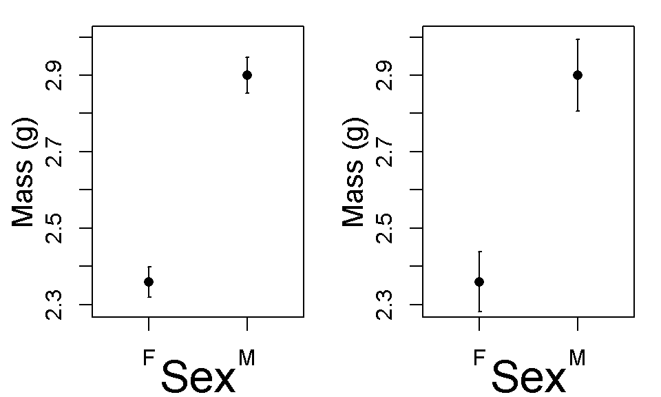
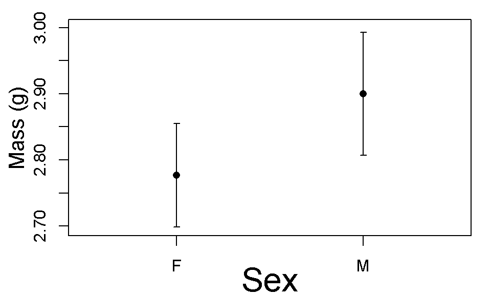

A an example of doing “inference by eye” using R.A. Fischer’s cat data. A good summary of this idea is Cummings et al. 2007. Error bars in experimental biology. http://jcb.rupress.org/content/177/1/7.short
dim(cats)## [1] 144 3summary(cats)## Sex Bwt Hwt
## F:47 Min. :2.000 Min. : 6.30
## M:97 1st Qu.:2.300 1st Qu.: 8.95
## Median :2.700 Median :10.10
## Mean :2.724 Mean :10.63
## 3rd Qu.:3.025 3rd Qu.:12.12
## Max. :3.900 Max. :20.50A more modern way would be to use dplyr()
library(doBy)
#get the mean and SD
cat.df1 <- summaryBy(Bwt ~ Sex, data = cats, FUN = c(mean,sd))
#get the sample size using length()
cat.df2 <- summaryBy(Bwt ~ Sex, data = cats, FUN = c(length))
#make a combined dataframe
cat.df3 <- merge(cat.df1,cat.df2)
#calculate the standard error SE by hand
cat.df3$SE <- cat.df3$Bwt.sd/sqrt(cat.df3$Bwt.length)Look at the results
cat.df3## Sex Bwt.mean Bwt.sd Bwt.length SE
## 1 F 2.359574 0.2739879 47 0.03996525
## 2 M 2.900000 0.4674844 97 0.04746585This uses the errbar() function. A modern contemporary way would use ggplot2 and possibly its extension using ggpubr.
This is the actual data. The 95% confidence intervals do not overlap, which indicates that the p-value for the t-test will be less than 0.05.
library(Hmisc)
par(mfrow = c(1,2),mar = c(3,3.5,1,1))
y.lim <- c(2.295,3)
errbar(1:2,
y = cat.df3$Bwt.mean,
yplus =cat.df3$Bwt.mean + cat.df3$SE,
yminus = cat.df3$Bwt.mean-cat.df3$SE,
xlab = "",
ylab = "",
xlim=c(0.5,2.5),
ylim = y.lim,
xaxt="n",cex =1)
axis(side=1,at=1:2,labels=cat.df3$Sex)
mtext("Sex", side = 1, line = 2, cex = 2)
mtext("Mass (g)", side = 2, line = 2.1, cex = 1.3)
errbar(1:2,
y = cat.df3$Bwt.mean,
yplus =cat.df3$Bwt.mean + 1.96*cat.df3$SE,
yminus = cat.df3$Bwt.mean-1.96*cat.df3$SE,
xlab = "",
ylab = "",
xlim=c(0.5,2.5),
ylim = y.lim,
xaxt="n",cex =1)
axis(side=1,at=1:2,labels=cat.df3$Sex)
mtext("Sex", side = 1, line = 2, cex = 2)
mtext("Mass (g)", side = 2, line = 2.1, cex = 1.3)
Make an alternative version of the data where there isn’t a difference between the male and female cats
cat.df3.mod <- cat.df3
cat.df3.mod$Bwt.mean[1] <- cat.df3$Bwt.mean[2]-cat.df3$Bwt.mean[2]*0.0425The overlap of the error bars here is greater than 1/2 the length of the bar; therefore the p-value for a t-test will be > 0.05.
y.lim <- c(2.6975,3)
par(mar = c(3,3.5,1,1))
errbar(1:2,
y = cat.df3.mod$Bwt.mean,
yplus =cat.df3.mod$Bwt.mean + cat.df3.mod$SE,
yminus = cat.df3.mod$Bwt.mean-cat.df3.mod$SE,
xlab = "",
ylab = "",
xlim=c(0.5,2.5),
ylim = y.lim,
xaxt="n",cex =1)
axis(side=1,at=1:2,labels=cat.df3.mod$Sex)
mtext("Sex", side = 1, line = 2, cex = 2)
mtext("Mass (g)", side = 2, line = 2.1, cex = 1.3)errbar(1:2,
y = cat.df3.mod$Bwt.mean,
yplus =cat.df3.mod$Bwt.mean + 1.96*cat.df3.mod$SE,
yminus = cat.df3.mod$Bwt.mean-1.96*cat.df3.mod$SE,
xlab = "",
ylab = "",
xlim=c(0.5,2.5),
ylim = y.lim,
xaxt="n",cex =1)
axis(side=1,at=1:2,labels=cat.df3.mod$Sex)
mtext("Sex", side = 1, line = 2, cex = 2)
mtext("Mass (g)", side = 2, line = 2.1, cex = 1.3)
A t-test for the differenec between female and male cats.
t.test(Bwt ~ Sex, data = cats)##
## Welch Two Sample t-test
##
## data: Bwt by Sex
## t = -8.7095, df = 136.84, p-value = 8.831e-15
## alternative hypothesis: true difference in means is not equal to 0
## 95 percent confidence interval:
## -0.6631268 -0.4177242
## sample estimates:
## mean in group F mean in group M
## 2.359574 2.900000summary(lm(Bwt ~ -1+Sex, data = cats))##
## Call:
## lm(formula = Bwt ~ -1 + Sex, data = cats)
##
## Residuals:
## Min 1Q Median 3Q Max
## -0.90000 -0.25957 -0.05957 0.30000 1.00000
##
## Coefficients:
## Estimate Std. Error t value Pr(>|t|)
## SexF 2.35957 0.06051 39.00 <2e-16 ***
## SexM 2.90000 0.04212 68.86 <2e-16 ***
## ---
## Signif. codes: 0 '***' 0.001 '**' 0.01 '*' 0.05 '.' 0.1 ' ' 1
##
## Residual standard error: 0.4148 on 142 degrees of freedom
## Multiple R-squared: 0.9778, Adjusted R-squared: 0.9775
## F-statistic: 3131 on 2 and 142 DF, p-value: < 2.2e-16